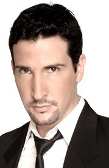
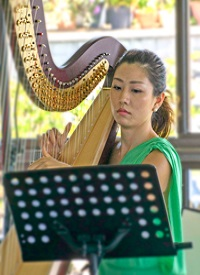

Special Guests
Mark Shiell (Conductor)

Mark has guest-conducted ensembles including the Melbourne Symphony Orchestra, West Australian Symphony, Moscow Symphony Orchestra, State Academic Symphony Orchestra of St. Petersburg, Victorian Opera, Orchestra Ensemble Kanazawa, Canberra Symphony Orchestra, Sydney Sinfonia, Melbourne Youth Orchestra, University of Melbourne Symphony Orchestra and the Orchestras of the State Music Camps in Melbourne and Adelaide.
Currently he serves as Artistic Director and Principal Conductor of Zelman Symphony Orchestra, the Ballarat Symphony and the Macquarie Philharmonia.
His love of community and youth music has kept him busy contributing to the growth and development of important initiatives in both of these areas here in Australia. Most recently, Mark developed a Regional Orchestra Weekend for ensembles from across Victoria to meet and perform together, with the aim to make this an annual event.
Mark is also passionate about the education and training of future conductors, and has been frequently involved as a guest teacher of the Masters of Conducting students at the Melbourne Conservatorium in 2015.
Adam Lopez (Vocal)

Adam Lopez’s exceptional vocal artistry has paved opportunities to perform backing vocals for some of the biggest names in the music industry such as Mariah Carey, Keith Urban and The Coors. His most recent noted collaboration was headlining with Australian Jazz legend James Morrison in a string of Symphonic Concerts in Perth, Hobart and Brisbane.
His discography includes an eclectic collection of genres spanning from Pop-Opera, Pop, Rhythm & Blues, Jazz, Power Ballads and Fiery Latin! His phenomenal vocal range smashed two Guinness World Records.
This achievement has astounded audiences from all around the world leading him to perform and appear on international television and radio stations in Japan, Spain, Italy, Korea, Hong Kong and the USA. Adam Lopez has undoubtedly got one of the most fascinating vocal instruments on the planet. He delighted audiences when he sang in Townsville with the Barrier Orchestra in 2012 along with Sean O’Boyle and James Morrison.
David Hudson (Musician, entertainer)

David performs a diverse range of musical styles from around the world and will be a great asset to our World Music Concert.
2015 has taken David to Turkey, Italy, France and the United Kingdom with private and public performances and now brings him to Townsville.
Domenico Taraborrelli (Accordion)

Domenico is one of Brisbane’s most experienced and versatile multicultural entertainers. He has performed in almost every possible style since he commenced his musical career in 1971 at age 4. He studied music on the traditional European instrument called the Piano Accordion and this is still his chosen instrument, although he also now uses the latest electronic midi accordion which incorporates other built in instruments.
Domenico moved from three piece cabaret bands to a more sophisticated five piece band, the Latin Mafia which performs swing and Latin classics from the Rat Pack era.
He has performed in many venues from QPAC with the Queensland Pops Orchestra to being runners up with his Celtic Band, Murphy’s Pigs at the Tamworth Golden Fiddle Awards.
Jennifer Bradstreet (Flute)

Jennifer Bradstreet completed a Bachelor of Music with Honours at the Sydney Conservatorium, before taking up a summer scholarship at St Andrews and Oxford in the UK, and then moving to London in 2010. She became a student at the Royal College of Music under British flautist Susan Milan, and graduated with a Postgraduate Diploma of Performance in 2011.
While in London, she played in side-by-side projects with the London Symphony and was invited onto the prestigious BBC Symphony Orchestral pathway. Many summer scholarships and international master-classes followed, in Germany, England and Italy.
In 2013, Jennifer accepted a Masters scholarship under James Kortum and Aldo Baerten (Belgium) at the Sydney Conservatorium, where she will complete her studies this year. She was a finalist in the 2013 Australian Flute Festival Orchestral Flute Competition and first-prize winner in the 2014 Australian Concerto & Vocal Competition (all instruments). She is active as a soloist and chamber musician, and also performs regularly with the Australian Opera and Ballet Orchestra in Sydney, with whom she has freelanced since 2013.
Raymond Yong (Conductor)

Raymond Yong was born in Malaysia, emigrating to Australia at the age of two. He received his initial musical training in Perth, performing regularly in public piano recitals from an early age. It was in High School that he forst took to the podium as a conductor, directing his school orchestra and choir.
Raymond went on to study conducting at the University of Melbourne as a pupil of the late John Hopkins and received further training in the Symphony Australia Young Development Programme. He became the Music Director of the Victorian Youth Symphony Orchestra and Victoria Chorale and was the Founding Director of Orchestra 21.
He has appeared as Guest Conductor for the Melbourne Chamber Orchestra, the Port Fairy Music Festival, Stonnington Symphony, Preston Symphony, and Kooyong Chamber Players. He has been a regular guest with the barrier Reef Orchestra since 2011,conducting the orchestra, performing as a piano soloist, and providing conducting workshops to teachers and conductors in the Townsville area.
Raymond is also a sought-after piano soloist and accompanist. Concert highlights include Chamber Music performances at the Musica Viva, Huntington Festival, the Linari Classic in Italy, as well as piano concerto engagements with the Melbourne Symphony, the Sydney Symphony, West Australian and Tasmanian Symphony Orchestras.
Leah Li (Harp)

Townsville based harpist Leah Xiang Li enjoys a diverse career as an orchestral and chamber musician, soloist, instrumental teacher and primary school language teacher.
Leah graduated from the Queensland Conservatorium Griffith University under the tutelage of Sebastien Lipman. She was the recipient of Ross Peters 4MBS Chamber Music Prize and performed for the Honourable Dame Quentin Bryce (former Governor-General of Australia). She was also the principal harpist for Australian International Symphony Orchestra Institution, Queensland Youth Symphony Orchestra, Queensland Conservatorium Symphony Orchestra and Queensland Conservatorium Opera Orchestra.
Leah‘s repertoire spans from the Baroque to the present day. She has a special interest in Jazz and is seeking to fulfil this passion through further study. Leah is also dedicated to education, community outreach and musical advocacy as demonstrated by her current involvement in Barrier Reef Orchestra.
Yoshika Masuda (Cello)

Born in Kobe, Japan, Yoshika Masuda first started to play the cello at the age of five. Following studies with George Pedersen in Australia, he went onto study at the Royal Northern College of Music in Manchester on a full scholarship.
Yoshika was recently awarded first prize at both the Australian Concerto & Vocal Competition and the YMF National Debut Concerto Competition, and is also the winner of the Yamaha Music Foundation of Europe String Award. He has also won top prizes at the Sydney Cello Award, Australian National Youth Concerto Competition and the J A Beare International Solo Bach Competition. Yoshika has performed concertos and recitals throughout Australia, Austria, France, Italy, Japan, the UK and USA.
Yoshika gained his Bachelor of Music with first class honours from the RNCM, receiving both the Sir John Munduell Principals’s Prize and the Leonard Rose Cello Award for outstanding achievement. He also completed his Master of Music at the RNCM with distinction the following year.
Yoshika is currently continuing his studies in Los Angeles as a Doctorate student. Yoshika’s cello is a fine Carl Becker model (1930), loaned to him from a private foundation.